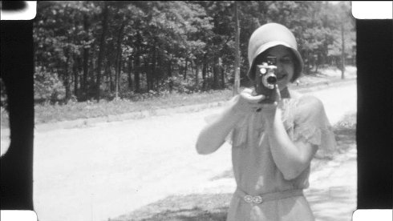
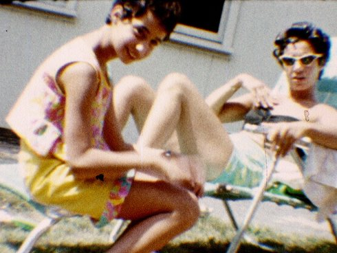
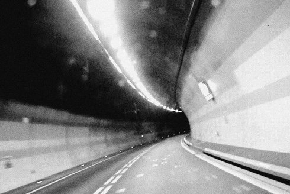

Labor of love

Gran Lux, Saint-étienne
Wednesday 17 oct 10.30 pm werkstattkino
closing night
Gran Lux is proud to present their factory, a former brewery, which they succeeded in saving from the jaws of demolition. It is now a place for the manufacture and exhibition of films, giving shape to the idea and the materiality of cinema. Programming is seen here as an ongoing construction, a conversation between works of all types, genres, epochs, nourished by the presence of resident and visiting artists, and inevitably generating nocturnal discussions between the very varied members of the audience. The Gran Lux factory is also an exacting space, demanding all the energy the small team has to give, and inspiring projects for which there is not always enough time. It forms the outline of a kind of parallel cinema industry, where lack of resources is largely compensated for by ingenuity. For labor of love factory members Olivier Dutel and Gaëlle Joly selected three short films that were found, produced, discussed, developed, printed and projected at Gran Lux, Saint-Étienne. Website Gran Lux www.ornamentalfilms.org |
(Gran Lux Saint-Étienne)
Film Base is a small unit that makes movies using 16mm or super8 film and with the help of light (artificial or sunlight). Development at home or in other friendly laboratories. Gran Lux (Saint-Étienne) is our cinema house.
The Podolski Archive Fund (Fonds d’archives Podolski) collects super8, 16mm or 35mm images (and many other things). The fund gives them a new life: inserted into programming or as material for new creations. The Fund lives between Brussels and Saint-Étienne.
Lunatic Shop

| Film Base & Fonds d’archives Podolski – 1930-1977 – 39 min – 16mm film – live soundtrack
|
| A waltz of emulsions and means of transport. A great geographical and temporal tour of Europe, from one amateur film to another.
|
Der Fährmann

| Film Base – 2016 – 14 min – 16mm – live soundtrack
|
| The ferryman crosses borders at dawn, pierces the mountains… Strange job. A fairground road movie where the camera (the eyewitness?) occupies the place of death.
|
Zebra Station
| Film Base & Fonds d’archives Podolski – 2018 – 27 min – 16mm – live soundtrack
|
| War is beautiful on the silver screen… This trip is designed with images of weapons tests filmed in 16mm in different American deserts. High speed cameras are at the party! A visual experience that will bring you closer to Lao Tzu.
|